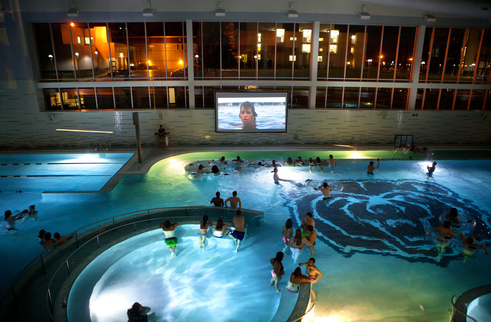
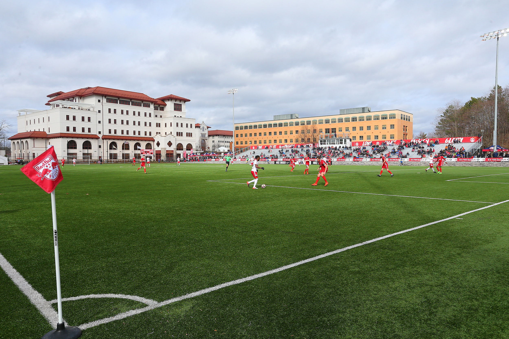

The Campus. HGSE is located on Appian Way in the heart of Harvard Square. ...
Classrooms. ...p
Multimedia Development Lab. ...
Videoconference Facilities. .... ...
Public Computers. .... ...
Multimedia Development Lab. ...
Conference Rooms and Conference Center. ...
The Commons at Gutman Library.. ...
Building a Sustainable Community..
.

Our Library
Is Harvard Library open to public?
Harvard's libraries offer events, exhibits, and programming for the public. Researchers from beyond Harvard may apply for Borrowing and Access cards, as well as use special collections. Get Started Using the Libraries · Use Harvard Library's Special Collections and Archives · Use Harvard Library as an Alum · Borrow, Renew

Swiming Pool
The pool has permanent spectator seating for 1,200, and there is room on the pool deck to accommodate 500 swimmers, coaches, and officials. Blodgett Pool has hosted several men's and women's Ivy and Eastern Championships, and was the site of the 57th annual NCAA Swimming and Diving Championships in 1980.

Largest PlayGround
This playground takes its name from Harvard University, the oldest institution of higher learning in the United States. The university was founded in 1636, only 16 years after the arrival of the Pilgrims at Plymouth. Located in Cambridge, Massachusetts, Harvard was named in 1638 for its first benefactor, John Harvard, a minister from Charlestown, Massachusetts who bequeathed half of his estate and his library to the school two years after its founding. Seven United States Presidents have been educated at Harvard and the school remains a prestigious research university to this day.